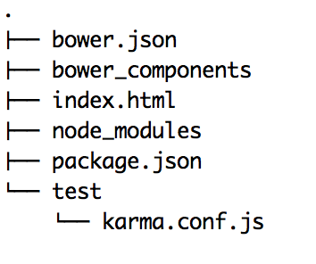

Cheatsheet...ish: Setting Up An Angular JS Project The TDD Way
Setting the Scene
For anyone who hasn't touched Angular JS before the promise of a framework that can create fantastic user interfaces that are almost instantaneously responsive is a big draw. Its ability to allow the creation of single page applications is also a massive plus but by throwing into the mix the integration of testing (unit and end to end) as a key part of the Angular project and you have a match made in heaven.
Now as an angular novice who wants to dive into writing tests and maybe even a bit of Angular code to perhaps make those tests pass there is one significant hurdle: setting up your test environment. This blog aims to act as a one stop shop Cheat-Sheet to take you from zero to coding in as few steps as possible. If at any point I've not covered anything in depth then the Angular documentation is a brilliant resource that can help you with the weeds.
Starting out
First things first there are some pre-requisites that are required in order to get things up and running. Make sure you have node and bower installed by running the following commands in a terminal:
node -v
bower -v
If either of these does not return a version number then they can be installed with the following:
brew install node
npm install bower -g
Now we are good to get moving.
Getting the Boilerplate up and Running
At this point we are good to create our project directory:
mkdir new_project
cd new_project
and setup our dependency manager:
bower init
At this point you can simply press enter and fill the bower.json with default information.
There are two ways that you can include angular in a project either by including the remote link in your html page.
<script src="http://ajax.googleapis.com/ajax/libs/angularjs/1.4.8/angular.min.js"></script>
Or as we will do using our newly installed package manager.
bower install angular --save
By keeping the Angular file locally during development you can save time and network resources as you only have to load the file once.
Once installed using bower Angular can now be included in your projects (currently) blank homepage in this case: index.html.
<!DOCTYPE html>
<html lang="en">
<head>
<meta charset="UTF-8">
<script src="bower_components/angular/angular.js"></script>
<title>New Project</title>
</head>
<body>
</body>
</html>
Preparing the way for Unit Testing
With that in place we are ready to get our unit testing setup. At its base Angular uses the Jasmine Framework augmented by Karma which is used to run the tests.
To setup this environment we first need to install Angular mocks and Angular route, modules that make mocking various aspects of an Angular App simple.
bower install angular-mocks --save-dev
bower install angular-route --save-dev
The --save-dev specifies that these dependencies will only be installed in a development environment.
Next up we need to create a file called a package.json that lists the node dependencies: our Karma and Jasmine files.
npm init
Again here you can simply press enter to create a default package.json. Now let install our node packages.
npm install karma karma-jasmine jasmine-core phantomjs karma-chrome-launcher karma-phantomjs-launcher --save-dev
npm install karma-cli -g
With all this installed we can create the config file required for Karma to run.
karma init
Answer the questions asked when running through the init process in order to create a file called karma.conf.js. This will hold all the information to run your tests and should look similar to the following for this project.
module.exports = function(config) {
config.set({
// base path that will be used to resolve all patterns (eg. files, exclude)
basePath: '../',
// frameworks to use
// available frameworks: https://npmjs.org/browse/keyword/karma-adapter
frameworks: ['jasmine'],
// list of files / patterns to load in the browser
files: [
'bower_components/angular/angular.js',
'bower_components/angular-route/angular-route.js',
'bower_components/angular-mocks/angular-mocks.js',
'*.js',
'test/*.spec.js'
],
// list of files to exclude
exclude: [],
// preprocess matching files before serving them to the browser
// available preprocessors: https://npmjs.org/browse/keyword/karma-preprocessor
preprocessors: {},
// test results reporter to use
// possible values: 'dots', 'progress'
// available reporters: https://npmjs.org/browse/keyword/karma-reporter
reporters: ['progress'],
// web server port
port: 9876,
// enable / disable colors in the output (reporters and logs)
colors: true,
// level of logging
// possible values: config.LOG_DISABLE || config.LOG_ERROR || config.LOG_WARN || config.LOG_INFO || config.LOG_DEBUG
logLevel: config.LOG_INFO,
// enable / disable watching file and executing tests whenever any file changes
autoWatch: true,
// start these browsers
// available browser launchers: https://npmjs.org/browse/keyword/karma-launcher
browsers: ['PhantomJS'],
// Continuous Integration mode
// if true, Karma captures browsers, runs the tests and exits
singleRun: true
});
};
By convention this file should be placed into a test folder such that our folder tree would now look something like this:

Although we haven't written any tests yet we should now be able to run Karma and see things fail using:
karma start test/karma.conf.js
We are now good to go with unit testing!
The Final Hurdle - End to End Testing
End to End testing allows us to create tests that run through the functionality of our Angular App in the same way that a normal day to day user would. As such they are crucial when connecting together our various controllers, directives and services into a functioning whole. Luckily for us Angular has a tool called Protractor that is designed exactly for this.
There's no getting away from it, another load of installation is required. Firstly:
npm install protractor -g
npm install protractor --save-dev
The reason for the double install is to ensure that we hold protractor globally but also to make sure that it is listed in our projects package.json as a dev dependency.
For our tests to work we need to have our project running on a server locally and for this the easiest tool to use is http-server. Install it:
npm install http-server -g && npm install http-server --save
Next we need to create a configuration file similar to the one we made for Karma to tell us tests where to go and what to run. Create a new file test/conf.js and add the following to it replacing nameOfMyFeatureTestFile.js with your feature test file:
exports.config = {
seleniumAddress: 'http://localhost:4444/wd/hub',
specs: ['nameOfMyFeatureTestFile.js']
}
We can now get to the business of writing and running our tests:
lets define a quick dummy controller in app.js:
var app = angular.module('newController', []);
and add this to our html:
<html lang="en" ng-app="newController">
Now we write a simple test:
describe('My New Project', function() {
it('has a title', function() {
browser.get('http://localhost:8080');
expect(browser.getTitle()).toEqual('New Project');
});
});
Open a terminal and run:
http-server
Open another and run:
webdriver-manager start
and finally:
protractor test/conf.js
Voilla! 1 test, 1 assertion, 0 failures.
Happy Testing.